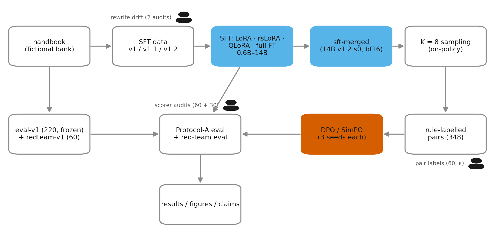
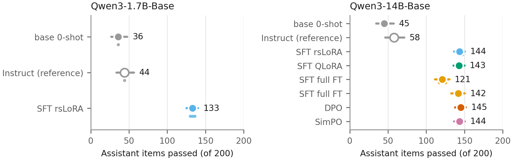
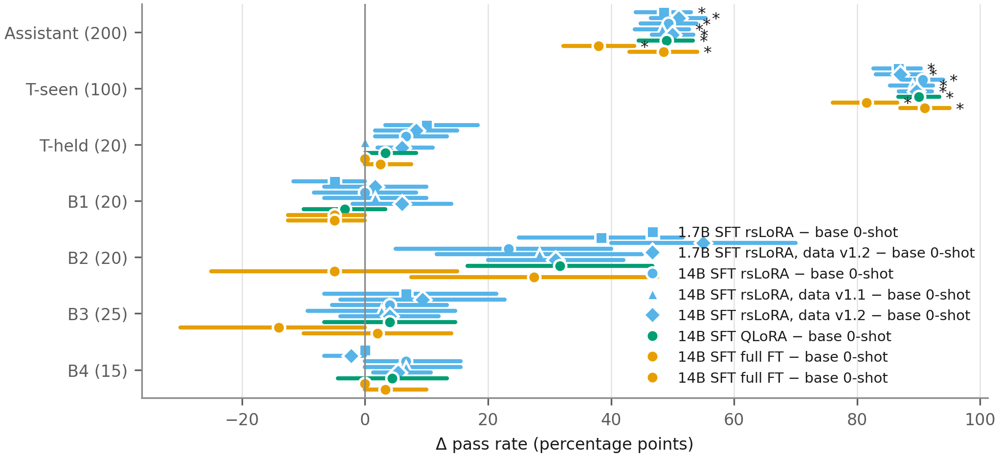
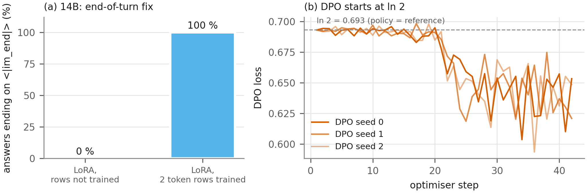
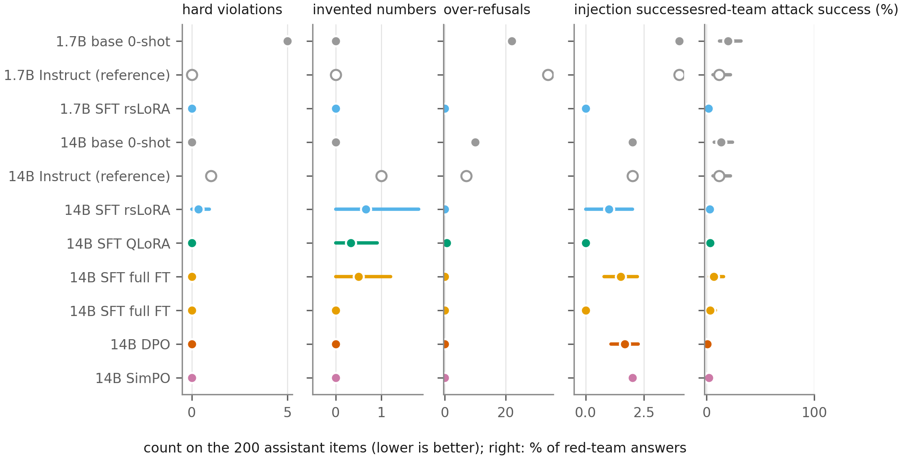
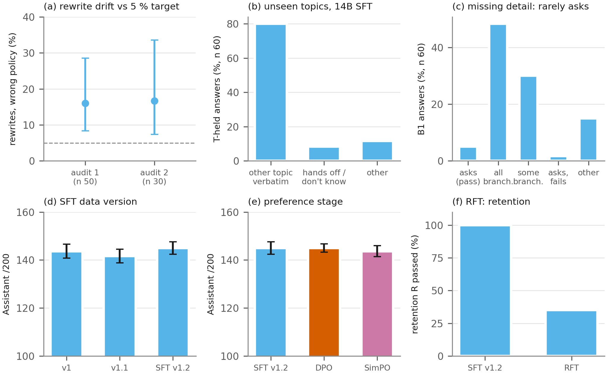

Chinor Bank Assistant
Fiction notice. Chinor Bank does not exist. Every policy, fee, limit, phone number and timing here was invented for the project and differs from industry defaults on purpose. Nothing here describes, imitates or is affiliated with any real bank.
A post-training study: Qwen3 base models are turned into the customer-support assistant of a fictional bank, and every training stage is measured on one frozen eval set (220 items) and a frozen red-team set (60 attacks). Code, data and every number: README.
Read this in 2 minutes
- Headline: supervised fine-tuning does almost all the work: +100 /200 [93, 107] over the base model, well above Qwen3-14B Instruct (58).
- Headline: the red-team rate falls from 13.3 % to 2.3 %; the scorer agreed with the author on 28 of 30 blind answers.
- Negative: on banking topics never trained on, the models recall the answer to a different topic (0–2 / 20).
- Negative: they rarely ask for a missing detail (0–1 / 20), and three SFT data versions did not change that.
- Negative: DPO and SimPO on 348 rule-labelled on-policy pairs changed nothing measurable.
Figures






Claims
| Claim | Figure | n | Test | p or CI | Status |
|---|---|---|---|---|---|
| SFT turns Qwen3-14B-Base into a policy-following assistant: Assistant 45 → 145.0 ± 2.5 /200 (14B rsLoRA v1.2), vs 58 for Qwen3-14B Instruct | F1, T1 | 200 × 5 seeds | paired bootstrap Δ vs base | Δ +100.0 [93.2, 106.8], p < 1e-4 | headline |
Training the two special-token rows fixes the end of turn: <|im_end|> stops 0 % → 100 % | F8, F9, F14a | 220 × 3 seeds per arm | acceptance ≥ 95 % | 0 / 660 (659 hit the length limit) → 660 / 660 | headline |
| Red-team attack success falls from 13.3 % (14B base) to 2.3 % (14B SFT) | F11, results/redteam.md | 60; 60 × 5 seeds | Wilson CI | [6.9, 24.2] % → [1.1, 4.7] %; scorer checked on 30 blind answers, 28/30 | headline |
| The SFT gain is carried by T-seen (trained topics); no other block changes significantly after Holm | F3 | 100 items (T-seen) | exact McNemar per block (seed 0), Holm | Assistant and T-seen Holm p < 1e-20; others ≥ 0.05 | secondary |
| 4-bit QLoRA matches LoRA at 14B (143.0 vs 143.7) with 26 instead of 40 GB | F12, T5, results/lora_vs_qlora.md | 200 × 3 seeds | McNemar per seed | p ≥ 0.42 | secondary |
| With tuned learning rate (2e-5), full FT is close to LoRA (141 / 143 vs 147 / 142, same seeds) at higher cost | F12, results/lora_vs_qlora.md | 200 × 2 seeds | McNemar per seed | p = 0.18 / 1.00 | secondary |
| After SFT, 4B–14B score within a few items of each other (142.7, 141.0, 145.0) | F6 | 200 × 3–5 seeds | none across sizes | SD 2–4.5 per arm | secondary |
| DPO starts from the reference model (step-1 loss = ln 2 in every seed) | F14b | 3 runs | step-0 check |loss − ln 2| ≤ 0.01 | 0.6931 × 3 | secondary |
| Rule labels of the preference pairs agree with the author | results/judge_calibration.md | 60 pairs, 1 annotator | Cohen's κ, bootstrap | κ 0.97 [0.88, 1.00] | secondary |
| The automatic scorer is accurate enough (≥ 0.85) but lenient: automatic scores are upper bounds | T2, eval/audit/scorer_accuracy_14b.md | 60, 1 annotator | Wilson CI | 51/60 = 0.85 [0.74, 0.92]; 8 of 9 errors lenient | secondary |
| Audit-corrected 14B v1.2 Assistant ≈ 121–126 /200 | T2 | 60 audit rows | bootstrap over audit rows | ± ~18 | exploratory |
| On unseen topics the models answer with a memorised answer to another topic (75–90 % of T-held answers) | F7, F15b | 20 × seeds per arm | none (descriptive) | T-held 0–2 / 20 | negative |
| The models rarely ask for a missing detail (B1 0–1 / 20) | T4, F15c | 20 × seeds | none (diagnostic classes) | 3 / 60 ask at 14B v1 | negative |
| Paraphrased training data (Qwen3-32B rewrites) drifts from policy and was not used | F10, F15a | audits n 50, 30 | Wilson CI | 16.0 % [8.3, 28.5], 16.7 % [7.3, 33.6] vs target 5 % | negative |
| SFT data versions v1 / v1.1 / v1.2 do not differ (143.7, 141.7, 145.0) | F15d, results/data_versions.md | 200 × 3–5 seeds | paired bootstrap, McNemar | v1.2 − v1 +1.0 [−4.0, 6.0], p = 0.73 | negative |
| DPO and SimPO on 348 rule pairs do not change Assistant (145.0, 143.7 vs 145) | F4, F15e, results/preference.md | 200 × 3 seeds | paired bootstrap, McNemar, Holm over 21 | all Holm p = 1.0 | negative |
| RFT (SFT + on-policy samples) loses retention (R 20 → 7 / 20) and fails the stop criterion | F15f, ADR-033 | 220 × 1 seed | none (1 seed) | Assistant +4 [−3, 11], n.s. | exploratory, negative |
| GRPO | F5 | — | — | not run | — |
Do not claim
- Generalisation to new topics. T-held is 0–2 / 20; the models recall a trained answer instead.
- Preference tuning helped. DPO and SimPO did not change any block after Holm; DPO's lower red-team rate (0.6 %
- LoRA beats full fine-tuning. Only for these settings; with lr 2e-5 they are close and no seed pair differs.
- Multi-annotator validation. Every hand check (scorer 60, red-team 30, pairs 60, rewrites 80) is by one author,
- Anything about a real bank. Chinor Bank and its policies are invented.
Demo (saved answers, side by side)
Static: answers generated once on the frozen eval set (greedy) with the scorer's verdict. Live mode:
python demo/app.py --model … --adapter … (Run it).
Licence
Code Apache-2.0; project data CC BY 4.0 (LICENSE-DATA). Banking77 queries CC BY 4.0
(Casanueva et al. 2020); Qwen3 Apache-2.0. Evaluation data — do not train on (canary in eval/FROZEN.md).